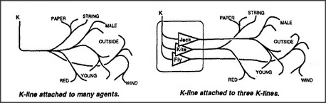

Yesterday, you watched Jack fly his kite. How do you remember that today? One answer would be, Remembering it is much like seeing it again. But yesterday, when you recognized that kite, you didn't really see it as something wholly new. The fact that you recognized it as a kite yesterday means that you already saw that kite in terms of even older memories.
This suggests two ways to make new memories of what you saw a moment ago. One scheme is shown to the left below: you simply connect a new K-line to all the agents that were recently active in your mind. The other way to make that memory is shown in the diagram to the right below: instead of attaching the new K-line to that whole multitude of separate agents, connect it only to whichever of your older K-lines were active recently. This will lead to a similar result since those K-lines were involved in arousing many of the agents that were active recently. This second scheme has two advantages: it is more economical, and it leads to forming memories as organized societies.
Consider that when you realized Jack was flying a kite, this must have involved the use of K-lines — for Jack and Fly and Kite — that had been formed at earlier times and were aroused by the sight of Jack flying his kite. When those three K-lines were activated, each of them in turn activated hundreds or thousands of other agents. (Your state of mind, when seeing that scene, resulted from combinations both of agents aroused directly by your senses and of agents aroused indirectly by your recognitions.) Now, our left-hand memory-scheme would need an enormous number of connections to link all those agents to the new K-line. But our right-hand scheme would obtain much the same effect by attaching the new K-line to only three old K-lines! Yet when you reactivate that K-line at some later date, it will, in turn, arouse the same K-lines for Jack, Fly, Kite, and whichever other recognitions were involved. As a result, you will reexperience many of the same recognitions as before. To that extent, you will feel and act as though you were back in the same situation again.
To be sure, these two types of memories would not produce exactly the same results. Our trick of connecting new K-lines to old ones will not recapture so many of the scene's precise, perceptual details.
Instead, the kinds of mental states that this hierarchical type of memory produces will be based more on stereotypes and default assumptions than on actual perceptions. Specifically, you will tend to remember only what you recognized at the time. So something is lost — but there's a gain in exchange. These K-line memory-trees lose certain kinds of details, but they retain more traces of the origins of our ideas. These memory-trees might not serve quite so well if the original circumstances were exactly repeated. But that never happens, anyway — and the structured memories will be much more easily adapted to new situations.